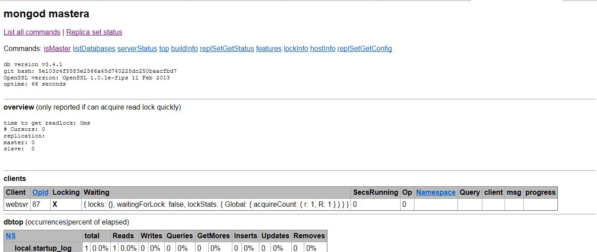

课程要求
熟悉 MongoDB 数据库各种概念
学会 MongoDB 的搭建
熟悉 MongoDB 的使用
简单运维
概念 NoSQL 简介 NoSQL(NoSQL = Not Only SQL )，意即”不仅仅是SQL”。
NoSQL，指的是非关系型的数据库。NoSQL有时也称作Not Only SQL的缩写，是对不同于传统的关系型数据库的数据库管理系统的统称。
NoSQL用于超大规模数据的存储。（例如谷歌或Facebook每天为他们的用户收集万亿比特的数据）。这些类型的数据存储不需要固定的模式，无需多余操作就可以横向扩展。
为什么使用NoSQL ? 今天我们可以通过第三方平台（如：Google,Facebook等）可以很容易的访问和抓取数据。用户的个人信息，社交网络，地理位置，用户生成的数据和用户操作日志已经成倍的增加。我们如果要对这些用户数据进行挖掘，那SQL数据库已经不适合这些应用了, NoSQL数据库的发展却能很好的处理这些大的数据。
NoSQL纪元
当下已经存在很多的NoSQL数据库，比如MongoDB、Redis、Riak、HBase、Cassandra等等。每一个都拥有以下几个特性中的一个：
不再使用SQL语言，比如MongoDB、Cassandra就有自己的查询语言
通常是开源项目
为集群运行而生
弱结构化——不会严格的限制数据结构类型
NoSQL 数据库的类型一览表
数据库类型
描述
主流产品
有谁在用
适用场景
不适用场景
键值（Key-Value）数据库
键值数据库就像在传统语言中使用的哈希表。你可以通过 key 来添加、查询或者删除数据，鉴于使用主键访问，所以会获得不错的性能及扩展性。
Riak、Redis、Memcached、Amazon’s Dynamo、Project Voldemort
GitHub （Riak）、BestBuy （Riak）、Twitter （Redis和Memcached）、StackOverFlow （Redis）、 Instagram （Redis）、Youtube （Memcached）、Wikipedia（Memcached）
储存用户信息，比如会话、配置文件、参数、购物车等等。这些信息一般都和 ID（键）挂钩，这种情景下键值数据库是个很好的选择。
1. 取代通过键查询，而是通过值来查询。Key-Value 数据库中根本没有通过值查询的途径。2. 需要储存数据之间的关系。在 Key-Value 数据库中不能通过两个或以上的键来关联数据。3. 事务的支持。在 Key-Value 数据库中故障产生时不可以进行回滚。
面向文档（Document-Oriented）数据库
面向文档数据库会将数据以文档的形式储存。每个文档都是自包含的数据单元，是一系列数据项的集合。每个数据项都有一个名称与对应的值，值既可以是简单的数据类型，如字符串、数字和日期等；也可以是复杂的类型，如有序列表和关联对象。数据存储的最小单位是文档，同一个表中存储的文档属性可以是不同的，数据可以使用 XML、JSON 或者 JSONB 等多种形式存储。
MongoDB、CouchDB、RavenDB
SAP （MongoDB）、Codecademy （MongoDB）、Foursquare （MongoDB）、NBC News （RavenDB）
1. 日志。企业环境下，每个应用程序都有不同的日志信息。Document-Oriented 数据库并没有固定的模式，所以我们可以使用它储存不同的信息。2. 分析。鉴于它的弱模式结构，不改变模式下就可以储存不同的度量方法及添加新的度量。
在不同的文档上添加事务。Document-Oriented 数据库并不支持文档间的事务，如果对这方面有需求则不应该选用这个解决方案。
列存储（Wide Column Store/Column-Family）数据库
列存储数据库将数据储存在列族（column family）中，一个列族存储经常被一起查询的相关数据。举个例子，如果我们有一个 Person 类，我们通常会一起查询他们的姓名和年龄而不是薪资。这种情况下，姓名和年龄就会被放入一个列族中，而薪资则在另一个列族中。
Cassandra、HBase
Ebay （Cassandra）、Instagram （Cassandra）、NASA （Cassandra）、Twitter （Cassandra and HBase）、Facebook （HBase）、Yahoo!（HBase）
1. 日志。因为我们可以将数据储存在不同的列中，每个应用程序可以将信息写入自己的列族中。2. 博客平台。我们储存每个信息到不同的列族中。举个例子，标签可以储存在一个，类别可以在一个，而文章则在另一个。
1. 如果我们需要 ACID 事务。Vassandra 就不支持事务。2. 原型设计。如果我们分析Cassandra 的数据结构，我们就会发现结构是基于我们期望的数据查询方式而定。在模型设计之初，我们根本不可能去预测它的查询方式，而一旦查询方式改变，我们就必须重新设计列族。
图（Graph-Oriented）数据库
图数据库允许我们将数据以图的方式储存。实体会被作为顶点，而实体之间的关系则会被作为边。比如我们有三个实体，Steve Jobs、Apple 和 Next，则会有两个“Founded by”的边将 Apple 和 Next 连接到 Steve Jobs。
Neo4J、Infinite Graph、OrientDB
Adobe （Neo4J）、Cisco （Neo4J）、T-Mobile （Neo4J）
1. 在一些关系性强的数据中2. 推荐引擎。如果我们将数据以图的形式表现，那么将会非常有益于推荐的制定 不适合的数据模型。图数据库的适用范围很小，因为很少有操作涉及到整个图。
MongoDB 简介 网站
MongoDB 是一个基于分布式文件存储的数据库。由 C++ 语言编写。旨在为 WEB 应用提供可扩展的高性能数据存储解决方案。
MongoDB 是一个介于关系数据库和非关系数据库之间的产品，是非关系数据库当中功能最丰富，最像关系数据库的。
分布式文件系统 分布式文件系统（Distributed File System）是指文件系统管理的物理存储资源不一定直接连接在本地节点上，而是通过计算机网络与节点相连。分布式文件系统的设计基于客户机/服务器模式。一个典型的网络可能包括多个供多用户访问的服务器。另外，对等特性允许一些系统扮演客户机和服务器的双重角色。
文档 文档是 MongoDB 中数据的基本单位，类似于关系数据库中的行（但是比行复杂）。多个键及其关联的值有序地放在一起就构成了文档。不同的编程语言对文档的表示方法不同，在JavaScript 中文档表示为：
{“greeting”:“hello,world”}
这个文档只有一个键“greeting”，对应的值为“hello,world”。多数情况下，文档比这个更复杂，它包含多个键/值对。例如：
{“greeting”:“hello,world”,“foo”: 3}
文档中的键/值对是有序的，下面的文档与上面的文档是完全不同的两个文档。
{“foo”: 3 ,“greeting”:“hello,world”}
文档中的值不仅可以是双引号中的字符串，也可以是其他的数据类型，例如，整型、布尔型等，也可以是另外一个文档，即文档可以嵌套。文档中的键类型只能是字符串。
集合 集合就是一组文档，类似于关系数据库中的表。集合是无模式的，集合中的文档可以是各式各样的。例如，{“hello,word”:“Mike”}和{“foo”: 3}，它们的键不同，值的类型也不同，但是它们可以存放在同一个集合中，也就是不同模式的文档都可以放在同一个集合中。既然集合中可以存放任何类型的文档，那么为什么还需要使用多个集合？这是因为所有文档都放在同一个集合中，无论对于开发者还是管理员，都很难对集合进行管理，而且这种情形下，对集合的查询等操作效率都不高。所以在实际使用中，往往将文档分类存放在不同的集合中，例如，对于网站的日志记录，可以根据日志的级别进行存储，Info级别日志存放在Info 集合中，Debug 级别日志存放在Debug 集合中，这样既方便了管理，也提供了查询性能。但是需要注意的是，这种对文档进行划分来分别存储并不是MongoDB 的强制要求，用户可以灵活选择。
可以使用“.”按照命名空间将集合划分为子集合。例如，对于一个博客系统，可能包括blog.user 和blog.article 两个子集合，这样划分只是让组织结构更好一些，blog 集合和blog.user、blog.article 没有任何关系。虽然子集合没有任何特殊的地方，但是使用子集合组织数据结构清晰，这也是MongoDB 推荐的方法。
数据库 MongoDB 中多个文档组成集合，多个集合组成数据库。一个MongoDB 实例可以承载多个数据库。它们之间可以看作相互独立，每个数据库都有独立的权限控制。在磁盘上，不同的数据库存放在不同的文件中。MongoDB 中存在以下系统数据库。
Admin 数据库：一个权限数据库，如果创建用户的时候将该用户添加到admin 数据库中，那么该用户就自动继承了所有数据库的权限。
Local 数据库：这个数据库永远不会被负责，可以用来存储本地单台服务器的任意集合。
Config 数据库：当MongoDB 使用分片模式时，config 数据库在内部使用，用于保存分片的信息。
搭建 MongoDB MongoDB 下载 MongoDB提供了可用于32位和64位系统的预编译二进制包，你可以从MongoDB官网下载安装，MongoDB预编译二进制包下载地址：http://www.mongodb.org/downloads
MongoDB 搭建简单的单机服务 实验环境为rhel7.5 mongodb 4.0.0 # !/bin/bash # Intall Mongodb 4.0.0 Single # 2018-07-04 SRC_URI="https://fastdl.mongodb.org/linux/mongodb-linux-x86_64-rhel70-4.0.0.tgz" PKG_NAME=`basename $SRC_URI` DIR=`pwd` DATE=`date +%Y%m%d%H%M%S` port=27017 \mv /alidata/mongodb /alidata/mongodb.bak.$DATE &> /dev/null mkdir /alidata/{mongodb,install} mkdir /alidata/mongodb/{data,log,conf} mkdir /alidata/mongodb/data/$port cd /alidata/install if [ ! -s $PKG_NAME ]; then wget -c $SRC_URI fi tar -xf mongodb-linux-x86_64-rhel70-4.0.0.tgz mv mongodb-linux-x86_64-rhel70-4.0.0/* /alidata/mongodb rm -rf mongodb-linux-x86_64-rhel70-4.0.0 if ! cat /etc/profile | grep 'export PATH=$PATH:/alidata/mongodb/bin' &> /dev/null;then echo 'export PATH=$PATH:/alidata/mongodb/bin' >> /etc/profile fi # 调整内核参数 # 1. 内核参数/sys/kernel/mm/transparent_hugepage/enabled # 2. 内核参数/sys/kernel/mm/transparent_hugepage/defrag echo never > /sys/kernel/mm/transparent_hugepage/enabled echo never > /sys/kernel/mm/transparent_hugepage/defrag # 创建单实例配置文件 cat > /alidata/mongodb/conf/mongodb${port}.conf << EOT systemLog: destination: file path: /alidata/mongodb/log/mongod${port}.log logAppend: true storage: journal: enabled: true dbPath: /alidata/mongodb/data/${port} directoryPerDB: true engine: wiredTiger wiredTiger: engineConfig: cacheSizeGB: 10 directoryForIndexes: true collectionConfig: blockCompressor: zlib indexConfig: prefixCompression: true net: port: ${port} EOT # 服务启动脚本 cat > /alidata/mongodb/mongodb.server << ENDF # !/bin/bash start(){ /alidata/mongodb/bin/mongod --config /alidata/mongodb/conf/mongodb\${port}.conf & } stop(){ /alidata/mongodb/bin/mongod --config /alidata/mongodb/conf/mongodb\${port}.conf --shutdown } case \$1 in start) start ;; stop) stop ;; restart) stop start ;; *) echo "Usage:\$0{start|stop|restart}" exit 1 esac ENDF cd $DIR source /etc/profile bash
实验环境为rhel7.2 mongodb 3.4.1 mastera 192.168.196.11
1.下载到本地并解压
安装指南可以查看压缩后的README
[root@mastera ~]# cd /tmp [root@mastera tmp]# ls mongodb-linux-x86_64-rhel70-3.4.1.tgz mysql_scripts.zip [root@mastera tmp]# tar -xf mongodb-linux-x86_64-rhel70-3.4.1.tgz -C /usr/local/ [root@mastera tmp]# cd /usr/local [root@mastera local]# ls bin etc games include lib lib64 libexec mongodb-linux-x86_64-rhel70-3.4.1 sbin share src [root@mastera local]# cd mongodb-linux-x86_64-rhel70-3.4.1/ [root@mastera mongodb-linux-x86_64-rhel70-3.4.1]# ls bin GNU-AGPL-3.0 MPL-2 README THIRD-PARTY-NOTICES [root@mastera mongodb-linux-x86_64-rhel70-3.4.1]# ln -s /usr/local/mongodb-linux-x86_64-rhel70-3.4.1/ /usr/local/mongodb [root@mastera mongodb-linux-x86_64-rhel70-3.4.1]# cd /usr/local/mongodb [root@mastera mongodb]# pwd /usr/local/mongodb
2.将可执行文件路径加入PATH变量中，并永久生效
[root@mastera mongodb]# echo "export PATH=$PATH:/usr/local/mongodb/bin" >> /etc/bashrc [root@mastera mongodb]# source /etc/bashrc [root@mastera mongodb]# ls bin bsondump mongo mongod mongodump mongoexport mongofiles mongoimport mongooplog mongoperf mongoreplay mongorestore mongos mongostat mongotop [root@mastera mongodb]# which mongo /usr/local/mongodb/bin/mongo
3.创建数据库目录和日志目录
MongoDB 默认的启动的数据库路径是 /data/db 。
[root@mastera mongodb]# mkdir /mongodb/data/db -p [root@mastera mongodb]# mkdir /mongodb/data/log -p
4.运行 MongoDB 服务
1)命令行参数运行 MongoDB 服务
可以在命令行中执行mongo安装目录中的bin目录执行mongod命令来启动mongdb服务。
–dbpath 指定数据路径
–logpath 指定日志路径
–logappend 指定日志追加
–port 指定监听端口
[root@mastera mongodb]# mongod --dbpath /mongodb/data/db/ --logpath /mongodb/data/log/mongodb.log --logappend & [1] 1714
这里有四个警告
访问权限问题
进程执行用户为root问题
内核参数/sys/kernel/mm/transparent_hugepage/enabled
内核参数/sys/kernel/mm/transparent_hugepage/defrag
[root@mastera mongodb]# cat /sys/kernel/mm/transparent_hugepage/enabled [always] madvise never [root@mastera mongodb]# echo never > /sys/kernel/mm/transparent_hugepage/enabled [root@mastera mongodb]# cat /sys/kernel/mm/transparent_hugepage/enabled always madvise [never] [root@mastera mongodb]# echo never > /sys/kernel/mm/transparent_hugepage/defrag [root@mastera mongodb]# cat /sys/kernel/mm/transparent_hugepage/defrag always madvise [never]
查看守护进程为mongod，监听端口为27017
[root@mastera mongodb]# ps -ef|grep mongo root 1714 1585 0 21:50 pts/0 00:00:00 mongod --dbpath /mongodb/data/db/ --logpath /mongodb/data/log/mongodb.log --logappend root 1736 1585 0 21:51 pts/0 00:00:00 grep --color=auto mongo [root@mastera mongodb]# netstat -luntp|grep mongo tcp 0 0 0.0.0.0:27017 0.0.0.0:* LISTEN 1714/mongod
2)配置文件启动 MongoDB 服务
新建配置文件存放路径/mongodb/mongodb.cnf
[root@mastera mongodb]# vim /mongodb/mongodb.cnf dbpath=/mongodb/data/db logpath=/mongodb/data/log/mongodb.log logappend=true port=27017 [root@mastera mongodb]# mongod -f /mongodb/mongodb.cnf & [1] 1762 [root@mastera mongodb]# ps -ef|grep mongo root 1762 1585 1 22:00 pts/0 00:00:00 mongod -f /mongodb/mongodb.cnf root 1780 1585 0 22:00 pts/0 00:00:00 grep --color=auto mongo [root@mastera mongodb]# netstat -luntp|grep mongo tcp 0 0 0.0.0.0:27017 0.0.0.0:* LISTEN 1762/mongod
5.MongoDB后台管理 Shell
如果你需要进入MongoDB后台管理，你需要先打开mongodb装目录的下的bin目录，然后执行mongo命令文件。
MongoDB Shell是MongoDB自带的交互式Javascript shell,用来对MongoDB进行操作和管理的交互式环境。
当你进入mongoDB后台后，它默认会链接到 test 文档（数据库）：
[root@mastera mongodb]# mongo MongoDB shell version v3.4.1 connecting to: mongodb://127.0.0.1:27017 MongoDB server version: 3.4.1 Welcome to the MongoDB shell. For interactive help, type "help". For more comprehensive documentation, see http://docs.mongodb.org/ Questions? Try the support group http://groups.google.com/group/mongodb-user Server has startup warnings: 2017-01-16T22:00:11.868+0800 I CONTROL [initandlisten] 2017-01-16T22:00:11.868+0800 I CONTROL [initandlisten] ** WARNING: Access control is not enabled for the database. 2017-01-16T22:00:11.868+0800 I CONTROL [initandlisten] ** Read and write access to data and configuration is unrestricted. 2017-01-16T22:00:11.868+0800 I CONTROL [initandlisten] ** WARNING: You are running this process as the root user, which is not recommended. 2017-01-16T22:00:11.868+0800 I CONTROL [initandlisten]
由于它是一个JavaScript shell，您可以运行一些简单的算术运算:
可以输入help获取帮助
> help db.help() help on db methods db.mycoll.help() help on collection methods sh.help() sharding helpers rs.help() replica set helpers help admin administrative help help connect connecting to a db help help keys key shortcuts help misc misc things to know help mr mapreduce show dbs show database names show collections show collections in current database show users show users in current database show profile show most recent system.profile entries with time >= 1ms show logs show the accessible logger names show log [name] prints out the last segment of log in memory, 'global' is default use <db_name> set current database db.foo.find() list objects in collection foo db.foo.find( { a : 1 } ) list objects in foo where a == 1 it result of the last line evaluated; use to further iterate DBQuery.shellBatchSize = x set default number of items to display on shell exit quit the mongo shell
现在让我们插入一些简单的数据，并对插入的数据进行检索：
> db.runoob.insert({x:10}) WriteResult({ "nInserted" : 1 }) > db.runoob.find() { "_id" : ObjectId("587cd2d4ba6fb83076d228f0"), "x" : 10 }
第一个命令将数字 10 插入到 runoob 集合的 x 字段中。
6.MongoDb web 用户界面
3.2 版后已移除: HTTP interface for MongoDB [http://www.mongoing.com/docs/administration/monitoring.html]
MongoDB 提供了简单的 HTTP 用户界面。 如果你想启用该功能，需要在启动的时候指定参数 –rest 。
[root@mastera mongodb]# mongod --dbpath /mongodb/data/db/ --logpath /mongodb/data/log/mongodb.log --logappend --rest & 2017-01-16T22:10:49.463+0800 I CONTROL [main] ** WARNING: --rest is specified without --httpinterface, 2017-01-16T22:10:49.464+0800 I CONTROL [main] ** enabling http interface [root@mastera ~]# ps -ef|grep mongo root 1859 1585 2 22:10 pts/0 00:00:00 mongod --dbpath /mongodb/data/db/ --logpath /mongodb/data/log/mongodb.log --logappend --rest root 1880 1680 0 22:11 pts/1 00:00:00 grep --color=auto mongo [root@mastera ~]# netstat -luntp|grep mongo tcp 0 0 0.0.0.0:27017 0.0.0.0:* LISTEN 1859/mongod tcp 0 0 0.0.0.0:28017 0.0.0.0:* LISTEN 1859/mongod
MongoDB 的 Web 界面访问端口比服务的端口多1000。
如果你的MongoDB运行端口使用默认的27017，你可以在端口号为28017访问web用户界面，即地址为：http://localhost:28017

MongoDB 安全配置策略 MongoDB黑客赎金事件始末
2015年底，有专家指出至少35000万个MongoDB数据库暴露在互联网上，近684.8T的数据在裸奔。据统计，今年1月Shodan上暴露在公网的MongoDB数据库多达47000个。著名安全专家John Matherly观察，不安全数据在以可怕的速度增加，从2015年7月到12月，短短四个月的时间不安全数据库实例增加了5000。Matherly在2015年就提出了这些裸露数据存在着巨大风险的论述。
果不其然，2016年12月27日，GDI Foundation 的安全研究人员 Victor Gevers首次发现了攻击者利用配置存在纰漏的开源数据库MongoDB展开了勒索行为。自称Harak1r1 的黑客组织将网络上公开的MongoDB资料库中的资料汇出，并将MongoDB服务器上的资料移除，然后向数据库所有人索取0.2个比特币(约208美元)的赎金。据悉，Harak1r1在短短几天的时间内攻击了2000多个MongoDB数据库，并有十多个所有人已支付赎金。
Harak1r1的攻击行为似乎点燃了黑客的攻击本能，众多鬣狗一下子围了上来，own3d(干掉了近千个数据库，赎金金额为0.5个比特币)、0704341626asdf(据统计干掉了至少740个数据库，赎金金额为0.15个比特币)、kraken0、3lix1r(这两个为后来者，但攻击速度不容小觑)。目前，MongoDB黑客攻击事件已经是一场大乱斗了，甚至还出现了黑客篡改其它黑客勒索信的情况。
默认Mongodb启动后任何机器都能通过默认端口连接上，非常危险，如果来个恶意分子把你数据给remove那就哭死吧，所以接下来说说Mongodb的安全配置。
Security Checklist
安全检查列表如下：
认证和授权 虽然 认证 和 授权 关系非常紧密，认证和授权是两个不同的概念。认证是用来识别用户的身份，授权控制已经认证的用户使用资源和行为的权限。
MongoDB在默认的情况下启动时是没有用户名和密码的验证的，如果你需要使用密码验证功能，可以通过下面两种方式打开：
# 启动mongodb时加上--auth sudo mongod --auth # 修改/etc/mongodb.conf配置文件 # 将auth = True这一行的注释去掉，保存文件，重启mongodb即可，而admin.system.users中保存了admin用户的信息。
启动认证的一般流程：
1.不带访问控制的启动服务
mongod --dbpath /mongodb/data/db --logpath /mongodb/data/log/mongodb.log --logappend &
2.连接实例
mongo --port 27017
3.创建超级账户
> use admin > db.createUser( { user: "myUserAdmin", pwd: "abc123", roles: [ { role: "userAdminAnyDatabase", db: "admin" } ] } )
4.带访问控制重新启动实例
mongod --auth --dbpath--dbpath /mongodb/data/db --logpath /mongodb/data/log/mongodb.log --logappend &
或者修改配置文件
# http://www.mongoing.com/docs/reference/configuration-options.html#security.authorization security: authorization=enabled
5.连接并认证超级账户
# 第一种方法连接前认证——使用 -u -p --authenticationDatabase 参数|解释| mongo --port 27017 -u "myUserAdmin" -p "abc123" --authenticationDatabase "admin" # 第二种方法连接后认证，在mongo shell中使用 db.auth(<username> mongo --port 27017 > use admin > db.auth("myUserAdmin" , "abc123" )
6.根据开发要求创建其他用户
一旦成功认证了超级用户，就可以通过db.createUser() 命令以及内置或者用户自定义的角色（权限）来创建其他用户
而myUserAdmin用户的权限只能管理用户和角色（权限）
接下来我们创建一个新用户myTest用户给test数据库，并且对test数据库拥有读写权限readWrite role，对reporting数据库有读的权限read role
use test db.createUser( { user: "myTester", pwd: "xyz123", roles: [ { role: "readWrite", db: "test" }, { role: "read", db: "reporting" } ] } )
用myTester用户连接和认证
在连接前认证
Start a mongo shell with the -u , -p , and the –authenticationDatabase command line options:
mongo --port 27017 -u "myTester" -p "xyz123" --authenticationDatabase "test"
在连接后认证
# 连接 mongo --port 27017 # 认证 > use test > db.auth("myTester" , "xyz123" ) # 插入一个集合 > db.foo.insert( { x: 1, y: 1 } ) # 查看reporting数据库的集合信息 > use reporting > db.a.find()
MongoDB中的用户分为超级用户(super user)和普通的数据库用户(database user)：
超级用户存放在admin数据库中(在MongoDB的初始情况下，admin数据库默认是空的)，这种用户拥有最大权限，可以对所有数据库进行任意操作；
数据库用户则是存放在另外的数据库中，这种用户只能访问自己的数据库。所有的用户信息都存放在自己数据库的system.users表中。
在MongoDB中创建用户非常简单，如下：
# 创建Admin用户 mongo use admin db.createUser('super', '123456') # 创建普通用户 mongo use test db.createUser('test_user', '123456')
具体的方法见MongoDB官方文档：add mongodb user
在MongoDB中，用户和权限有以下特性：
1. 数据库是由超级用户来创建的，一个数据库可以包含多个用户，一个用户只能在一个数据库下，不同数据库中的用户可以同名；
2. 如果在 admin 数据库中不存在用户，即使 mongod 启动时添加了 --auth参数，此时不进行任何认证还是可以做任何操作；
3. 在 admin 数据库创建的用户具有超级权限，可以对 MongoDB 系统内的任何数据库的数据对象进行操作；
4. 特定数据库比如 test1 下的用户 test_user1，不能够访问其他数据库 test2，但是可以访问本数据库下其他用户创建的数据；
5. 不同数据库中同名的用户不能够登录其他数据库。比如数据库 test1 和 test2 都有用户 test_user，以 test_user 登录 test1 后,不能够登录到 test2 进行数据库操作
删除用户的操作如下：
> use test > db.system.users.remove({user:"myTester" })
限制访问IP和端口 MongoDB可以限制只允许某一特定IP来访问，只要在启动时加一个参数bind_ip即可，或者在/etc/mongodb.conf中添加bind_ip配置，如下:
# 方法一 mongod ‐‐bind_ip 127.0.0.1,10.0.133.14 # 方法二 在/etc/mongodb.conf文件中添加以下内容： bind_ip = 127.0.0.1,10.0.133.14
这样之后，MongoDB服务端只有127.0.0.1和10.0.133.14这两个 IP 可以访问了。
MongoDB默认的监听端口是27017，为了安全起见，你可以修改这个监听端口，避免恶意的连接尝试。修改方法同样有两种，如下：
客户端访问时不指定端口会连接到默认端口27017。当你修改了MongoDB服务端的端口后，客户端连接MongoDB时需要指定端口号，如：
# 方法一 mongod --bind_ip 127.0.0.1,10.0.133.14 --port 28018 # 方法二 在/etc/mongodb.conf文件中添加以下内容： port = 28018 mongo 10.0.133.14:28018
MongoDB 配置文件详解 系统日志systemLog Options systemLog: verbosity: <int> #在3.0版更改，详细级别决定了MongoDB输出的信息量和调试量，默认为0 quiet: <boolean> #静默模式，不推荐生产使用，不利于排查问题 traceAllExceptions: <boolean> #打印详细的调试信息。使用其他日志记录进行支持相关的故障排除。 syslogFacility: <string> #将消息记录到系统日志时使用的设施级别。 path: <string> #mongod或mongos应发送所有诊断日志信息的日志文件的路径，在指定的路径上创建日志文件 logAppend: <boolean> #为true，则在mongos或mongod 实例重新启动时将新条目附加到现有日志文件的末尾 logRotate: <string> #3.0.0新版功能，三个选项 rename,reopen,logAppend必须为true destination: <string> #MongoDB发送所有日志输出的目的地两个选项：file or syslog timeStampFormat: <string> #Default: iso8601-local 1969-12-31T19:00:00.000-0500 component: accessControl: verbosity: <int> command: verbosity: <int> eg: systemLog: destination: file path: "/alidata/mongodb/log/mongod_22001.log" logAppend: true
verbosity:
详细级别的范围可以从0到5：
0是MongoDB默认的日志详细级别，包含 信息性消息。
1到 5增加了详细级别以包含 调试消息。
参考地址：http://docs.mongoing.com/reference/log-messages.html#log-messages-configure-verbosity
logRotate：
rename：重命名日志文件。
进程管理processManagement Options processManagement: fork: <boolean> #默认：False 启用在后台运行mongos或mongod进程的守护进程模式 pidFilePath: <string>
网络选项Net Options net: port: <int> #默认：27017 bindIp: <string> #4.0默认只允许本地访问。3.2默认允许所有。mongos或mongod绑定的IP地址，以侦听来自应用程序的连接要绑定到多个IP地址，请输入逗号分隔值列表。 maxIncomingConnections: <int> #默认：65536。mongos或mongod可以接受的最大并发连接数。 wireObjectCheck: <boolean> #默认值：True ipv6: <boolean> #在版本3.0中删除。MongoDB 3.0和更高版本中，IPv6始终处于启用状态。 unixDomainSocket: enabled: <boolean> pathPrefix: <string> #默认：/ tmp filePermissions: <int> #默认：0700 设置UNIX域套接字文件的权限 只适用于基于Unix的系统 http: enabled: <boolean> #Default: False 3.2 版后已移除 JSONPEnabled: <boolean> RESTInterfaceEnabled: <boolean> ssl: sslOnNormalPorts: <boolean> # 2.6版后已移除。在3.0版本更改：大多数MongoDB发行版现在包含对TLS / SSL的支持 mode: <string> #2.6 新版功能. PEMKeyFile: <string> PEMKeyPassword: <string> clusterFile: <string> clusterPassword: <string> CAFile: <string> CRLFile: <string> allowConnectionsWithoutCertificates: <boolean> allowInvalidCertificates: <boolean> allowInvalidHostnames: <boolean> disabledProtocols: <string> FIPSMode: <boolean>
安全Security Options security: keyFile: <string> clusterAuthMode: <string> #2.6新版功能。 authorization: <string> #默认：禁用 启用或禁用基于角色的访问控制（RBAC）来控制每个用户对数据库资源和操作的访问。 transitionToAuth: <boolean> #默认：False 3.4 新版功能: javascriptEnabled: <boolean> #默认值：True 启用或禁用服务器端JavaScript执行 redactClientLogData: <boolean> #3.4新版功能：仅适用于MongoDB Enterprise。 sasl: hostName: <string> serviceName: <string> saslauthdSocketPath: <string> enableEncryption: <boolean> #默认：False 3.2新版功能：为WiredTiger存储引擎启用加密 仅在MongoDB Enterprise中可用 encryptionCipherMode: <string> #3.2新版功能 仅在MongoDB Enterprise中可用 encryptionKeyFile: <string> #仅在MongoDB Enterprise中可用 kmip: keyIdentifier: <string> #3.2新版功能 rotateMasterKey: <boolean> serverName: <string> port: <string> clientCertificateFile: <string> clientCertificatePassword: <string> serverCAFile: <string> ldap: #3.4新版功能：仅适用于MongoDB Enterprise。 servers: <string> bind: method: <string> saslMechanism: <string> queryUser: <string> queryPassword: <string> useOSDefaults: <boolean> #3.4新版功能：仅适用于Windows平台的MongoDB Enterprise。 transportSecurity: <string> timeoutMS: <int> userToDNMapping: <string> authz: queryTemplate: <string>
参数设置setParameter Option setParameter: <parameter1>: <value1> <parameter2>: <value2> eg: setParameter: enableLocalhostAuthBypass: false ldapUserCacheInvalidationInterval: <int> #默认：30
存储Storage Options storage: dbPath: <string> #缺省值：Linux和OS X上的/data/db，Windows上的\data\db indexBuildRetry: <boolean> #默认值：True mongod是否在下次启动时重建不完整的索引 不适用于使用内存存储引擎的mongod实例 repairPath: <string> journal: enabled: <boolean> #Default: true on 64-bit systems, false on 32-bit systems commitIntervalMs: <num> #默认值：100或30 3.2新版功能 directoryPerDB: <boolean> #默认：False syncPeriodSecs: <int> #默认：60 不要在生产系统上设置这个值。在几乎所有情况下，您都应该使用默认设置。 engine: <string> #在3.2版本更改：从MongoDB 3.2开始，wiredTiger是默认的 mmapv1: preallocDataFiles: <boolean> #默认值：True 2.6版后已移除 nsSize: <int> #默认：16 quota: enforced: <boolean> #默认：false MongoDB每个数据库最多有8个数据文件 使用storage.quota.maxFilesPerDB调整配额 。 maxFilesPerDB: <int> #默认：8 smallFiles: <boolean> #默认：False journal: debugFlags: <int> #类型：整数 提供测试功能 commitIntervalMs: <num> #3.2版本已移除 wiredTiger: engineConfig: cacheSizeGB: <number> #类型：float WiredTiger将用于所有数据的内部缓存的最大大小，控制的物理内存 #物理内存-wiredtiger-其他进程-系统所占用的内存=filesystem cache journalCompressor: <string> #默认：snappy 3.0.0新版功能 directoryForIndexes: <boolean> #默认：false 3.0.0新版功能 collectionConfig: blockCompressor: <string> #默认：snappy indexConfig: prefixCompression: <boolean> #默认值：true inMemory: engineConfig: inMemorySizeGB: <number> #默认值：物理RAM的50％少于1 GB 在3.4版本更改：数值可以从256MB到10TB，可以是一个浮点数 仅在MongoDB Enterprise中可用
OperationProfiling Options operationProfiling: slowOpThresholdMs: <int> #默认值：100 数据库分析器认为查询的阈值（以毫秒为单位）变慢。 mode: <string> #默认：关闭 数据库分析可能会影响数据库性能 off,slowOp,all
复制Replication Options replication: oplogSizeMB: <int> #ype: integer 以兆字节为单位 对于64位系统，oplog通常是可用磁盘空间的5％ replSetName: <string> #类型：字符串 secondaryIndexPrefetch: <string> #默认：全部 仅在 mmapv1 存储引擎中可用 none,all,_id_only enableMajorityReadConcern: <boolean> #默认：False 3.2新版功能
集群分片sharding Options sharding: clusterRole: <string> #configsvr 默认启动端口27019 shardsvr 默认启动端口27018 archiveMovedChunks: <boolean> #3.2版本更改：从3.2开始，MongoDB 默认使用false 在块迁移期间，分片不保存从分片迁移的文档
检查日志AuditLog Options
注解
Available only in MongoDB Enterprise
auditLog: destination: <string> #2.6 新版功能 format: <string> path: <string> filter: <string>
简单网络管理协议 snmp Options snmp: subagent: <boolean> master: <boolean>
Mongos-only Options replication: localPingThresholdMs: <int> #Default: 15 以毫秒为单位 sharding: configDB: <string> #从MongoDB 3.2开始，分片集群的配置服务器可以部署为一个副本集。副本集配置服务器必须运行WiredTiger存储引擎。MongoDB 3.2弃用配置服务器的三个镜像 mongod实例。 eg： sharding： configDB：<configReplSetName> /cfg1.example.net:27017，cfg2.example.net:27017，...
Windows Service Options processManagement: windowsService: serviceName: <string> # default: MongoDB displayName: <string> description: <string> serviceUser: <string> servicePassword: <string>
MongoDB WT建议配置项 单实例配置 systemLog: destination: file # path: /data/mongodb/log/mongod.log logAppend: true storage: # journal: enabled: true # dbPath: /data/zhou/mongo1/ # directoryPerDB: true # engine: wiredTiger # wiredTiger: engineConfig: # cacheSizeGB: 10 # directoryForIndexes: true # collectionConfig: blockCompressor: zlib # indexConfig: prefixCompression: true # net: port: 27017
复制集配置 （在上述配置上加入如下几个配置）：
replication: # oplogSizeMB: 20 # replSetName: zhou1
分片集群配置 分片复制集配置
（单实例节点的基础上）：
replication: # oplogSizeMB: 20 # replSetName: zhou1 # sharding: # clusterRole: shardsvr
config server配置 （单实例节点的基础上）
# sharding: # clusterRole: configsvr
Mongos配置 （与单实例不同）：
# systemLog: destination: file # path: /data/mongos/mongod.log logAppend: true # net: # port: 29020 # sharding: # configDB: 10.96.29.2:29017,10.96.29.2:29018,10.96.29.2:29019
MongoDB 搭建具有冗余容错功能的复制集 主从复制是MongoDB最常用的复制方式。这种方式非常灵活，可用于备份、故障恢复、读拓展等。
复制集（replication set）是有自动故障恢复功能的主动集群。主从集群和复制集最为明显的区别在于，复制集没有固定的“主节点”。复制集总会有一个活跃节点primary和一个或多个备份节点secondary。
搭建主从复制 搭建主从可以在启动时通过参数设置，也可以在客户端交互界面下配置。
参数配置
通过参数搭建步骤
启动主服务器mongod --master
启动从服务器mongod --slave --source ip:port
所有从节点都是从主节点复制内容。一个集群中有多少个从节点，并没有明确的限制，但是上千个也会可能吃不消，一般不超过12个就可以运转良好。
参数解释
参数
解释
–only
从节点指定只复制特定某个数据库
–savedelay
从节点应用主节点的操作时增加延时，单位s，认为误操作有重要的防护作用
–fastsync
以主节点的数据快照为基础启动从节点。快照比作完全同步速度快很多
–autoresync
如果从节点与主节点不同步了，则自动重新同步
–oplogSize
主节点oplog的大小，单位MB
客户端配置
客户端配置从机
启动mongod服务mongod --slave
通过客户端程序mongo登陆服务
使用本地> use local
为从机添加源> db.sources.insert({"host" : "ip:port"})
查看从机的源> db.sources.find()
移除从机的源> db.sources.remove({"host" : "ip:port"})
我们可以发现，sources集和可以被当作普通集合进行操作，而且为管理节点提供很大的灵活性。
搭建复制集 复制集最美妙的地方就是所有东西都是自动化的。
自动提升备份节点成为活跃节点，以确保运转正常；
对于开发而言，也很易用，仅需要为复制集指定下服务器，驱动程序就会自动找到服务器，在当前活跃节点死机时自动处理故障恢复
实践1——搭建包含两台服务器的复制集 1.命名复制集booboo
2.复制集中服务器的主机名hostname
3.启动复制集node1mongod --dbpath /mongodb/data/node1 --port 10001 --replSet booboo/masterb:10002
4.启动复制集node2mongod --dbpath /mongodb/data/node2 --port 10002 --replSet booboo/mastera:10001
5.添加集群节点node3
mongod --dbpath /mongodb/data/node3 --port 10003 --replSet booboo/mastera:10001 mongod --dbpath /mongodb/data/node3 --port 10003 --replSet booboo/mastera:10001,masterb:10002 # 以上两种方法都行
6.初始化复制集
# 连接一种一台服务器 mongo mastera:10001/admin > db.runCommand({"replSetInitiate" : {"_id" : "booboo" ,"members" : [{"_id" :1,"host" :"mastera:10001" },{"_id" :2,"host" :"masterb" :10002}]}})
初始化文档
解释
"_id": "booboo"复制集的名字
"members" : [,]复制集中的服务器列表，之后还能添加，每个服务器文档至少要有两个
"_id"每个服务器的唯一ID
"hostname" : hostname这个key指定服务器主机名
7.查看日志观察那个节点被选为primary活跃节点
8.查看官方最新的复制集文档 https://www.mongodb.org/display/DOCS/Replica+Sets
实践2——故障切换和活跃节点选举 MongoDB 搭建大规模数据集群 MongoDB 完成集群的自动部署 使用 MongoDB mongo shell
如果你不带任何参数运行 mongo ， mongo shell将尝试连接运行在localhost上端口号为27017的MongoDB实例。
db]# mongo MongoDB shell version v3.4.1 connecting to: mongodb://127.0.0.1:27017 MongoDB server version: 3.4.1
输入db，显示你当前正在使用的数据库：
此操作将返回默认数据库test
使用show dbs列出所有可用的数据库
> show dbs admin 0.000GB local 0.000GB
要切换数据库，使用use <db>，如下例所示：
> use local switched to db local > db local > use admin switched to db admin > db admin > use test switched to db test > db test
sql与mongodb术语对比
SQL术语/概念
MongoDB术语/概念
解释/说明
database
database
数据库
table
collection
数据库表/集合
row
document
数据记录行/文档
column
field
数据字段/域
index
index
索引
table joins
表连接,MongoDB不支持
primary key
primary key
主键,MongoDB自动将_id字段设置为主键
数据库命名规范 系统已存在的三个数据库：
Admin 数据库：一个权限数据库，如果创建用户的时候将该用户添加到admin 数据库中，那么该用户就自动继承了所有数据库的权限。
Local 数据库：这个数据库永远不会被负责，可以用来存储本地单台服务器的任意集合。
Config 数据库：当MongoDB 使用分片模式时，config 数据库在内部使用，用于保存分片的信息。
数据库也通过名字来标识。数据库名可以是满足以下条件的任意UTF-8字符串:
不能是空字符串（””)。
不得含有’ ‘（空格)、.、$、/、\和\0 (空宇符)。
应全部小写。
最多64字节。
文档命名规范 文档是一个键值(key-value)对(即BSON)。MongoDB 的文档不需要设置相同的字段，并且相同的字段不需要相同的数据类型，这与关系型数据库有很大的区别，也是 MongoDB 非常突出的特点。
一个简单的文档例子如下：{"site":"www.uplooking.com", "name":"尚观科技"}
需要注意的是：
文档中的键/值对是有序的。
文档中的值不仅可以是在双引号里面的字符串，还可以是其他几种数据类型（甚至可以是整个嵌入的文档)。
MongoDB区分类型和大小写。
MongoDB的文档不能有重复的键。
文档的键是字符串。除了少数例外情况，键可以使用任意UTF-8字符。
文档键命名规范
键不能含有\0 (空字符)。这个字符用来表示键的结尾。
“.”和”$”有特别的意义，只有在特定环境下才能使用。
以下划线”_“开头的键是保留的(不是严格要求的)。
集合命名规范 集合就是 MongoDB 文档组，类似于 RDBMS （关系数据库管理系统：Relational Database Management System)中的表格。
集合存在于数据库中，集合没有固定的结构，这意味着你在对集合可以插入不同格式和类型的数据，但通常情况下我们插入集合的数据都会有一定的关联性。
比如，我们可以将以下不同数据结构的文档插入到集合中：
{"site":"www.baidu.com"} {"site":"www.google.com","name":"Google"} {"site":"www.uplooking.com","name":"尚观科技","num":1}
当第一个文档插入时，集合就会被创建。
合法的集合名
集合名不能是空字符串””。
集合名不能含有\0字符（空字符)，这个字符表示集合名的结尾。
集合名不能以”system.”开头，这是为系统集合保留的前缀。
用户创建的集合名字不能含有保留字符。有些驱动程序的确支持在集合名里面包含，这是因为某些系统生成的集合中包含该字符。除非你要访问这种系统创建的集合，否则千万不要在名字里出现$。
元数据 数据库的信息是存储在集合中。它们使用了系统的命名空间：dbname.system.*
在MongoDB数据库中名字空间 .system.* 是包含多种系统信息的特殊集合(Collection)，如下:
集合命名空间
描述
dbname.system.namespaces
列出所有名字空间。
dbname.system.indexes
列出所有索引。
dbname.system.profile
包含数据库概要(profile)信息。
dbname.system.users
列出所有可访问数据库的用户。
dbname.local.sources
包含复制对端（slave）的服务器信息和状态。
对于修改系统集合中的对象有如下限制。
在{{system.indexes}}插入数据，可以创建索引。但除此之外该表信息是不可变的(特殊的drop index命令将自动更新相关信息)。
{{system.users}}是可修改的。{{system.profile}}是可删除的。
MongoDB 数据类型 下表为MongoDB中常用的几种数据类型。
数据类型
描述
String
字符串。存储数据常用的数据类型。在 MongoDB 中，UTF-8 编码的字符串才是合法的。
Integer
整型数值。用于存储数值。根据你所采用的服务器，可分为 32 位或 64 位。
Boolean
布尔值。用于存储布尔值（真/假）。
Double
双精度浮点值。用于存储浮点值。
Min/Max keys
将一个值与 BSON（二进制的 JSON）元素的最低值和最高值相对比。
Arrays
用于将数组或列表或多个值存储为一个键。
Timestamp
时间戳。记录文档修改或添加的具体时间。
Object
用于内嵌文档。
Null
用于创建空值。
Symbol
符号。该数据类型基本上等同于字符串类型，但不同的是，它一般用于采用特殊符号类型的语言。
Date
日期时间。用 UNIX 时间格式来存储当前日期或时间。你可以指定自己的日期时间：创建 Date 对象，传入年月日信息。
Object ID
对象 ID。用于创建文档的 ID。
Binary Data
二进制数据。用于存储二进制数据。
Code
代码类型。用于在文档中存储 JavaScript 代码。
Regular expression
正则表达式类型。用于存储正则表达式。
最基本的文档的读写更新删除 CRUD 创建数据库 use dbname 创建数据库的语法为：use database_name
学过mysql的同学会认为只有数据库存在才能use，但是在mongodb中use后面的数据库不存在就会创建。
课堂实战：创建数据库uplooking
> use uplooking switched to db uplooking > db uplooking
如果此时用show dbs查看所有的数据库会发现刚才创建的uplooking库并不存在，这是因为uplooking库中没有数据导致的。
> show dbs admin 0.000GB local 0.000GB
删除数据库 db.dropDatabase() MongoDB 删除数据库的语法格式如下：db.dropDatabase()
课堂实战：创建数据库booboo，再删除booboo数据库
> use booboo switched to db booboo > db booboo > db.dropDatabase() { "ok" : 1 }
插入文档 insert() MongoDB中提供了以下方法来插入文档到一个集合:
db.collection.insert() db.collection.insertOne() New in version 3.2 db.collection.insertMany() New in version 3.2
文档的数据结构和JSON基本一样。所有存储在集合中的数据都是BSON格式。
BSON是一种类json的一种二进制形式的存储格式,简称Binary JSON。
MongoDB 使用 insert() 或 save() 方法向集合中插入文档，语法如下：
db.COLLECTION_NAME.insert(document)
课堂实战：向uplooking库中booboo集合中插入文档
> use uplooking switched to db uplooking > db.booboo.insert({'title' : 'mongodb' , ... "description" : "mongodb is a nosql database", ... "by" : "www.uplooking.com", ... "tags" : [ "mongodb", "database", "nosql" ], ... "likes" : 100}) WriteResult({ "nInserted" : 1 })
插入的时候，key可以不加引号，因为默认key的数据类型只能是字符串类型。
以上实例中 booboo 是我们的集合名，如果该集合不在该数据库中， MongoDB 会自动创建该集合并插入文档。
查看已插入文档：db.COLLECTION_NAME.find()
> db.booboo.find() { "_id" : ObjectId("58818af08fce77b49860b790"), "title" : "mongodb", "description" : "mongodb is a nosql database", "by" : "www.uplooking.com", "tags" : [ "mongodb", "database", "nosql" ], "likes" : 100 }
我们也可以将数据定义为一个变量，如下所示：
> document=({'title' : 'mongodb' , ... "description" : "mongodb is a nosql database", ... "by" : "www.uplooking.com", ... "tags" : [ "mongodb", "database", "nosql" ], ... "likes" : 100}) { "title" : "mongodb", "description" : "mongodb is a nosql database", "by" : "www.uplooking.com", "tags" : [ "mongodb", "database", "nosql" ], "likes" : 100 }
执行插入操作：
> db.booboo.insert(document) WriteResult({ "nInserted" : 1 })
插入文档你也可以使用 db.booboo.save(document) 命令。如果不指定 _id 字段 save() 方法类似于 insert() 方法。如果指定 _id 字段，则会更新该 _id 的数据。
更新文档 update() save() MongoDB 使用 update() 和 save() 方法来更新集合中的文档。接下来让我们详细来看下两个函数的应用及其区别。
update() 方法
update() 方法用于更新已存在的文档。语法格式如下：
db.collection.update( <query>, <update>, { upsert: <boolean>, multi: <boolean>, writeConcern: <document> } )
参数说明：
query : update的查询条件，类似sql update查询内where后面的。
update : update的对象和一些更新的操作符（如$,$inc…）等，也可以理解为sql update查询内set后面的
upsert : 可选，这个参数的意思是，如果不存在update的记录，是否插入objNew,true为插入，默认是false，不插入。
multi : 可选，mongodb 默认是false,只更新找到的第一条记录，如果这个参数为true,就把按条件查出来多条记录全部更新。
writeConcern :可选，抛出异常的级别。
实例
我们在集合 booboo 中的数据如下：
> db.booboo.find() { "_id" : ObjectId("58abae1bc7d333637aa4bb35"), "title" : "mongodb", "description" : "mongodb is a nosql database", "by" : "www.uplooking.com", "tags" : [ "mongodb", "database", "nosql" ], "likes" : 100 } { "_id" : ObjectId("58abaea0c7d333637aa4bb36"), "title" : "mongodb", "description" : "mongodb is a nosql database", "by" : "www.uplooking.com", "tags" : [ "mongodb", "database", "nosql" ], "likes" : 100 } { "_id" : ObjectId("58abaedfc7d333637aa4bb37"), "title" : "mongodb", "description" : "mongodb is a nosql database", "by" : "www.uplooking.com", "tags" : [ "mongodb", "database", "nosql" ], "likes" : 100 }
接着我们通过 update() 方法来更新标题(title):
> db.booboo.update({"title" : "mongodb" },{$set :{"title" : "MongoDB Learning" }}) WriteResult({ "nMatched" : 1, "nUpserted" : 0, "nModified" : 1 }) > db.booboo.find() { "_id" : ObjectId("58abae1bc7d333637aa4bb35"), "title" : "MongoDB Learning", "description" : "mongodb is a nosql database", "by" : "www.uplooking.com", "tags" : [ "mongodb", "database", "nosql" ], "likes" : 100 } { "_id" : ObjectId("58abaea0c7d333637aa4bb36"), "title" : "mongodb", "description" : "mongodb is a nosql database", "by" : "www.uplooking.com", "tags" : [ "mongodb", "database", "nosql" ], "likes" : 100 } { "_id" : ObjectId("58abaedfc7d333637aa4bb37"), "title" : "mongodb", "description" : "mongodb is a nosql database", "by" : "www.uplooking.com", "tags" : [ "mongodb", "database", "nosql" ], "likes" : 100 }
可以看到标题(title)由原来的 “MongoDB 教程” 更新为了 “MongoDB”。
以上语句只会修改第一条发现的文档，如果你要修改多条相同的文档，则需要设置 multi 参数为 true。
> db.booboo.update({"title" : "mongodb" },{$set :{"title" : "MongoDB Learning" }},{multi:true }) WriteResult({ "nMatched" : 2, "nUpserted" : 0, "nModified" : 2 }) > db.booboo.find() { "_id" : ObjectId("58abae1bc7d333637aa4bb35"), "title" : "MongoDB Learning", "description" : "mongodb is a nosql database", "by" : "www.uplooking.com", "tags" : [ "mongodb", "database", "nosql" ], "likes" : 100 } { "_id" : ObjectId("58abaea0c7d333637aa4bb36"), "title" : "MongoDB Learning", "description" : "mongodb is a nosql database", "by" : "www.uplooking.com", "tags" : [ "mongodb", "database", "nosql" ], "likes" : 100 } { "_id" : ObjectId("58abaedfc7d333637aa4bb37"), "title" : "MongoDB Learning", "description" : "mongodb is a nosql database", "by" : "www.uplooking.com", "tags" : [ "mongodb", "database", "nosql" ], "likes" : 100 }
db.booboo.find().pretty()美观的显示，可以自己试一下
save() 方法
save() 方法通过传入的文档来替换已有文档。语法格式如下：
db.collection.save( <document>, { writeConcern: <document> } )
参数说明：
document : 文档数据。
writeConcern :可选，抛出异常的级别。
实例
以下实例中我们替换了 “_id” : ObjectId(“58abae1bc7d333637aa4bb35”) 的文档数据：
> db.booboo.save({"_id" : ObjectId("58abae1bc7d333637aa4bb35" ), "title" : "MongoDB Learning" , "description" : "mongodb is a nosql database" , "by" : "www.uplooking.com" , "tags" : [ "mongodb" , "database" , "nosql" ], "likes" : 100,'url' :'http://www.uplooking.com' }) WriteResult({ "nMatched" : 1, "nUpserted" : 0, "nModified" : 1 }) > db.booboo.find() { "_id" : ObjectId("58abae1bc7d333637aa4bb35"), "title" : "MongoDB Learning", "description" : "mongodb is a nosql database", "by" : "www.uplooking.com", "tags" : [ "mongodb", "database", "nosql" ], "likes" : 100, "url" : "http://www.uplooking.com" } { "_id" : ObjectId("58abaea0c7d333637aa4bb36"), "title" : "MongoDB Learning", "description" : "mongodb is a nosql database", "by" : "www.uplooking.com", "tags" : [ "mongodb", "database", "nosql" ], "likes" : 100 } { "_id" : ObjectId("58abaedfc7d333637aa4bb37"), "title" : "MongoDB Learning", "description" : "mongodb is a nosql database", "by" : "www.uplooking.com", "tags" : [ "mongodb", "database", "nosql" ], "likes" : 100 }
删除文档 remove() MongoDB remove()函数是用来移除集合中的数据。
MongoDB数据更新可以使用update()函数。在执行remove()函数前先执行find()命令来判断执行的条件是否正确，这是一个比较好的习惯。
语法
remove() 方法的基本语法格式如下所示：
db.collection.remove( <query>, <justOne> )
如果你的 MongoDB 是 2.6 版本以后的，语法格式如下：
db.collection.remove( <query>, { justOne: <boolean>, writeConcern: <document> } )
参数说明：
query :（可选）删除的文档的条件。
justOne : （可选）如果设为 true 或 1，则只删除一个文档。
writeConcern :（可选）抛出异常的级别。
实例
移除 title 为 ‘MongoDB Learning’ 的文档：
> db.booboo.remove({"title" : "MongoDB Learning" }) WriteResult({ "nRemoved" : 3 }) > db.booboo.find()
如果你只想删除第一条找到的记录可以设置 justOne 为 1，如下所示：
db.COLLECTION_NAME.remove(DELETION_CRITERIA,1)
> db.booboo.insert({'title' :'a' ,'likes' :20}) WriteResult({ "nInserted" : 1 }) > db.booboo.insert({'title' :'a' ,'likes' :30}) WriteResult({ "nInserted" : 1 }) > db.booboo.insert({'title' :'c' ,'likes' :9}) WriteResult({ "nInserted" : 1 }) > db.booboo.find() { "_id" : ObjectId("58abb894c7d333637aa4bb38"), "title" : "a", "likes" : 20 } { "_id" : ObjectId("58abb8b2c7d333637aa4bb39"), "title" : "a", "likes" : 30 } { "_id" : ObjectId("58abb8b8c7d333637aa4bb3a"), "title" : "c", "likes" : 9 } > db.booboo.remove({"title" : "a" },1) WriteResult({ "nRemoved" : 1 }) > db.booboo.find() { "_id" : ObjectId("58abb8b2c7d333637aa4bb39"), "title" : "a", "likes" : 30 } { "_id" : ObjectId("58abb8b8c7d333637aa4bb3a"), "title" : "c", "likes" : 9 }
如果你想删除所有数据，可以使用以下方式（类似常规 SQL 的 truncate 命令）：
> db.booboo.remove() 2017-02-21T11:53:09.280+0800 E QUERY [main] Error: remove needs a query : DBCollection.prototype._parseRemove@src/mongo/shell/collection.js:409:1 DBCollection.prototype.remove@src/mongo/shell/collection.js:434:18 @(shell):1:1 > db.booboo.remove({}) WriteResult({ "nRemoved" : 2 }) > db.booboo.find()
注意，db.booboo.remove()中一定写上”{}”，否则会报错哦！
删除集合 drop() 集合删除语法格式如下：db.collection.drop()
> show dbs admin 0.000GB local 0.000GB uplooking 0.000GB > db uplooking > show collections booboo > db.booboo.drop() true > show collections >
查询文档 find() pretty() 语法
MongoDB 查询数据的语法格式如下：
> db.COLLECTION_NAME.find()
find() 方法以非结构化的方式来显示所有文档。
如果你需要以易读的方式来读取数据，可以使用 pretty() 方法，语法格式如下：
> db.booboo.find().pretty()
pretty() 方法以格式化的方式来显示所有文档。
实例
以下实例我们查询了集合 booboo 中的数据：
> db.booboo.insert({"title" : "mongodb" , "description" : "mongodb is a nosql database" , "by" : "www.uplooking.com" , "tags" : [ "mongodb" , "database" , "nosql" ], "likes" : 100 }) WriteResult({ "nInserted" : 1 }) > db.booboo.find().pretty() { "_id" : ObjectId("58abd086c7d333637aa4bb3b"), "title" : "mongodb", "description" : "mongodb is a nosql database", "by" : "www.uplooking.com", "tags" : [ "mongodb", "database", "nosql" ], "likes" : 100 }
除了 find() 方法之外，还有一个 findOne() 方法，它只返回一个文档。
> db.booboo.insert({"title" : "mongodb" , "description" : "mongodb is a nosql database" , "by" : "www.uplooking.com" , "tags" : [ "mongodb" , "database" , "nosql" ], "likes" : 90 }) WriteResult({ "nInserted" : 1 }) > db.booboo.findOne() { "_id" : ObjectId("58abd086c7d333637aa4bb3b"), "title" : "mongodb", "description" : "mongodb is a nosql database", "by" : "www.uplooking.com", "tags" : [ "mongodb", "database", "nosql" ], "likes" : 100 }
MongoDB 与 RDBMS Where 语句比较
如果你熟悉常规的 SQL 数据，通过下表可以更好的理解 MongoDB 的条件语句查询：
操作
格式
范例
RDBMS中的类似语句
等于
{:}
db.booboo.find({“by”:”www.uplooking.com"}).pretty()
where by = ‘www.uplooking.com ‘
小于
{:{$lt:}}
db.booboo.find({“likes”:{$lt:50}}).pretty()
where likes < 50
小于或等于
{:{$lte:}}
db.booboo.find({“likes”:{$lte:50}}).pretty()
where likes <= 50
大于
{:{$gt:}}
db.boobool.find({“likes”:{$gt:50}}).pretty()
where likes > 50
大于或等于
{:{$gte:}}
db.booboo.find({“likes”:{$gte:50}}).pretty()
where likes >= 50
不等于
{:{$ne:}}
db.booboo.find({“likes”:{$ne:50}}).pretty()
where likes != 50
MongoDB AND 条件
MongoDB 的 find() 方法可以传入多个键(key)，每个键(key)以逗号隔开，及常规 SQL 的 AND 条件。
语法格式如下：
> db.booboo.find({key1:value1, key2:value2}).pretty()
实例
以下实例查询键 by 值为 www.uplooking.com 和键 title 值为 mongodb 的数据
> db.booboo.find({'by' :'www.uplooking.com' ,'title' :'mongodb' }) { "_id" : ObjectId("58abd086c7d333637aa4bb3b"), "title" : "mongodb", "description" : "mongodb is a nosql database", "by" : "www.uplooking.com", "tags" : [ "mongodb", "database", "nosql" ], "likes" : 100 } { "_id" : ObjectId("58abd0cbc7d333637aa4bb3c"), "title" : "mongodb", "description" : "mongodb is a nosql database", "by" : "www.uplooking.com", "tags" : [ "mongodb", "database", "nosql" ], "likes" : 90 }
以上实例中类似于 WHERE 语句：WHERE by=’www.uplooking.com ‘ AND title=’mongodb’
MongoDB OR 条件
MongoDB OR 条件语句使用了关键字 $or,语法格式如下：
> db.booboo.find( { $or: [ {key1: value1}, {key2:value2} ] } ).pretty()
实例
以下实例中，我们演示了查询键 by 值为 www.uplooking.com 或键 title 值为 mongodb 的文档。
> db.booboo.find({$or :{'by' :'www.uplooking.com' ,'title' :'mongodb' }}).pretty() Error: error: { "ok" : 0, "errmsg" : "$or must be an array", "code" : 2, "codeName" : "BadValue" } > db.booboo.find({$or :[{'by' :'www.uplooking.com' },{'title' :'mongodb' }]}).pretty() { "_id" : ObjectId("58abd086c7d333637aa4bb3b"), "title" : "mongodb", "description" : "mongodb is a nosql database", "by" : "www.uplooking.com", "tags" : [ "mongodb", "database", "nosql" ], "likes" : 100 } { "_id" : ObjectId("58abd0cbc7d333637aa4bb3c"), "title" : "mongodb", "description" : "mongodb is a nosql database", "by" : "www.uplooking.com", "tags" : [ "mongodb", "database", "nosql" ], "likes" : 90 }
AND 和 OR 联合使用
以下实例演示了 AND 和 OR 联合使用，类似常规 SQL 语句为： ‘where likes>50 AND (by = ‘www.uplooking.com ‘ OR title = ‘mongodb’)’
> db.booboo.find({'likes' :{$gt :50},$or :[{'by' :'www.uplooking.com' },{'title' :'mongodb' }]}) { "_id" : ObjectId("58abd086c7d333637aa4bb3b"), "title" : "mongodb", "description" : "mongodb is a nosql database", "by" : "www.uplooking.com", "tags" : [ "mongodb", "database", "nosql" ], "likes" : 100 } { "_id" : ObjectId("58abd0cbc7d333637aa4bb3c"), "title" : "mongodb", "description" : "mongodb is a nosql database", "by" : "www.uplooking.com", "tags" : [ "mongodb", "database", "nosql" ], "likes" : 90 } > db.booboo.find({'likes' :{$gt :50},$or :[{'by' :'www.uplooking.com' },{'title' :'mongodb' }]}).pretty() { "_id" : ObjectId("58abd086c7d333637aa4bb3b"), "title" : "mongodb", "description" : "mongodb is a nosql database", "by" : "www.uplooking.com", "tags" : [ "mongodb", "database", "nosql" ], "likes" : 100 } { "_id" : ObjectId("58abd0cbc7d333637aa4bb3c"), "title" : "mongodb", "description" : "mongodb is a nosql database", "by" : "www.uplooking.com", "tags" : [ "mongodb", "database", "nosql" ], "likes" : 90 }
条件操作符 MongoDB中条件操作符有：
(>) 大于 - $gt
(<) 小于 - $lt
(>=) 大于等于 - $gte
(<= ) 小于等于 - $lte
操作符在上一节中已经学习了基本语法，下面请完成相应练习：
使用数据库uplooking，集合booboo中已有数据如下所示：
> db.booboo.find() { "_id" : ObjectId("58abd086c7d333637aa4bb3b"), "title" : "mongodb", "description" : "mongodb is a nosql database", "by" : "www.uplooking.com", "tags" : [ "mongodb", "database", "nosql" ], "likes" : 100 } { "_id" : ObjectId("58abd0cbc7d333637aa4bb3c"), "title" : "mongodb", "description" : "mongodb is a nosql database", "by" : "www.uplooking.com", "tags" : [ "mongodb", "database", "nosql" ], "likes" : 90 } { "_id" : ObjectId("58abd66bc7d333637aa4bb3d"), "title" : "mongodb", "description" : "mongodb is a nosql database", "by" : "www.uplooking.com", "tags" : [ "mongodb", "database", "nosql" ], "likes" : 50 } { "_id" : ObjectId("58abd66fc7d333637aa4bb3e"), "title" : "mongodb", "description" : "mongodb is a nosql database", "by" : "www.uplooking.com", "tags" : [ "mongodb", "database", "nosql" ], "likes" : 30 }
获取 “booboo” 集合中 “likes” 大于 50 的数据
获取 “booboo” 集合中 “likes” 小于 90 的数据
获取 “booboo” 集合中 “likes” 大于等于 50 的数据
获取 “booboo” 集合中 “likes” 小于等于 90 的数据
获取 “booboo” 集合中 “likes” 大于 50 小于 100 的数据
获取 “booboo” 集合中 “likes” 小于 50 或者 大于 90 的数据
答案如下：
> db.booboo.find({'likes' :{$gt :50}}) { "_id" : ObjectId("58abd086c7d333637aa4bb3b"), "title" : "mongodb", "description" : "mongodb is a nosql database", "by" : "www.uplooking.com", "tags" : [ "mongodb", "database", "nosql" ], "likes" : 100 } { "_id" : ObjectId("58abd0cbc7d333637aa4bb3c"), "title" : "mongodb", "description" : "mongodb is a nosql database", "by" : "www.uplooking.com", "tags" : [ "mongodb", "database", "nosql" ], "likes" : 90 } > db.booboo.find({'likes' :{$lt :90}}) { "_id" : ObjectId("58abd66bc7d333637aa4bb3d"), "title" : "mongodb", "description" : "mongodb is a nosql database", "by" : "www.uplooking.com", "tags" : [ "mongodb", "database", "nosql" ], "likes" : 50 } { "_id" : ObjectId("58abd66fc7d333637aa4bb3e"), "title" : "mongodb", "description" : "mongodb is a nosql database", "by" : "www.uplooking.com", "tags" : [ "mongodb", "database", "nosql" ], "likes" : 30 } > db.booboo.find({'likes' :{$gte :50}}) { "_id" : ObjectId("58abd086c7d333637aa4bb3b"), "title" : "mongodb", "description" : "mongodb is a nosql database", "by" : "www.uplooking.com", "tags" : [ "mongodb", "database", "nosql" ], "likes" : 100 } { "_id" : ObjectId("58abd0cbc7d333637aa4bb3c"), "title" : "mongodb", "description" : "mongodb is a nosql database", "by" : "www.uplooking.com", "tags" : [ "mongodb", "database", "nosql" ], "likes" : 90 } { "_id" : ObjectId("58abd66bc7d333637aa4bb3d"), "title" : "mongodb", "description" : "mongodb is a nosql database", "by" : "www.uplooking.com", "tags" : [ "mongodb", "database", "nosql" ], "likes" : 50 } > db.booboo.find({'likes' :{$lte :90}}) { "_id" : ObjectId("58abd0cbc7d333637aa4bb3c"), "title" : "mongodb", "description" : "mongodb is a nosql database", "by" : "www.uplooking.com", "tags" : [ "mongodb", "database", "nosql" ], "likes" : 90 } { "_id" : ObjectId("58abd66bc7d333637aa4bb3d"), "title" : "mongodb", "description" : "mongodb is a nosql database", "by" : "www.uplooking.com", "tags" : [ "mongodb", "database", "nosql" ], "likes" : 50 } { "_id" : ObjectId("58abd66fc7d333637aa4bb3e"), "title" : "mongodb", "description" : "mongodb is a nosql database", "by" : "www.uplooking.com", "tags" : [ "mongodb", "database", "nosql" ], "likes" : 30 } > db.booboo.find({'likes' :{$gt :50,$lt :100}}) { "_id" : ObjectId("58abd0cbc7d333637aa4bb3c"), "title" : "mongodb", "description" : "mongodb is a nosql database", "by" : "www.uplooking.com", "tags" : [ "mongodb", "database", "nosql" ], "likes" : 90 } > db.booboo.find({$or :[{'likes' :{$gt :90}},{'likes' :{$lt :50}}]}) { "_id" : ObjectId("58abd086c7d333637aa4bb3b"), "title" : "mongodb", "description" : "mongodb is a nosql database", "by" : "www.uplooking.com", "tags" : [ "mongodb", "database", "nosql" ], "likes" : 100 } { "_id" : ObjectId("58abd66fc7d333637aa4bb3e"), "title" : "mongodb", "description" : "mongodb is a nosql database", "by" : "www.uplooking.com", "tags" : [ "mongodb", "database", "nosql" ], "likes" : 30 }
$type操作符和数据类型 $type操作符是基于BSON类型来检索集合中匹配的数据类型，并返回结果。
MongoDB 中可以使用的类型如下表所示：
Type
Number
Alias
Notes
Double
1
“double”
String
2
“string”
Object
3
“object”
Array
4
“array”
Binary data
5
“binData”
Undefined
6
“undefined”
Deprecated.
ObjectId
7
“objectId”
Boolean
8
“bool”
Date
9
“date”
Null
10
“null”
Regular Expression
11
“regex”
DBPointer
12
“dbPointer”
Deprecated.
JavaScript
13
“javascript”
Symbol
14
“symbol”
Deprecated.
JavaScript (with scope)
15
“javascriptWithScope”
32-bit integer
16
“int”
Timestamp
17
“timestamp”
64-bit integer
18
“long”
Decimal128
19
“decimal”
New in version 3.4.
Min key
-1
“minKey”
Max key
127
“maxKey”
基本数据类型
null：用于表示空值或者不存在的字段，{“x”:null}
布尔型：布尔类型有两个值true和false，{“x”:true}
数值：shell默认使用64为浮点型数值。{“x”：3.14}或{“x”：3}。对于整型值，可以使用NumberInt（4字节符号整数）或NumberLong（8字节符号整数），{“x”:NumberInt(“3”)}{“x”:NumberLong(“3”)}
字符串：UTF-8字符串都可以表示为字符串类型的数据，{“x”：“呵呵”}
日期：日期被存储为自新纪元依赖经过的毫秒数，不存储时区，{“x”:new Date()}
正则表达式：查询时，使用正则表达式作为限定条件，语法与JavaScript的正则表达式相同，{“x”:/[abc]/}
数组：数据列表或数据集可以表示为数组，{“x”： [“a“，“b”,”c”]}
内嵌文档：文档可以嵌套其他文档，被嵌套的文档作为值来处理，{“x”:{“y”:3 }}
对象Id：对象id是一个12字节的字符串，是文档的唯一标识，{“x”: objectId() }
二进制数据：二进制数据是一个任意字节的字符串。它不能直接在shell中使用。如果要将非utf-字符保存到数据库中，二进制数据是唯一的方式。
代码：查询和文档中可以包括任何JavaScript代码，{“x”:function(){/… /}}
请先删除原有的集合booboo中的数据，插入新的数据
> db.booboo.remove({}) WriteResult({ "nRemoved" : 4 }) > db.booboo.find() > db.booboo.insert({"title" : "MySQL" , "description" : "MySQL is the most popular Open Source SQL database management system" , "by" : "uplooking" , "url" : "http://www.mysql.com" , "tags" : [ "mysql" , "database" ], "likes" : 200}) WriteResult({ "nInserted" : 1 }) > db.booboo.insert({"title" : "Python" , "description" : "Python is an interpreted, object-oriented, high-level programming language with dynamic semantics" , "by" : "uplooking" , "url" : "http://www.python.org" , "tags" : [ "language" , "python" ], "likes" : 150}) WriteResult({ "nInserted" : 1 }) > db.booboo.insert({title:'MongoDB' ,description:'MongoDB is an open-source document database that provides high performance, high availability, and automatic scaling.' ,by:'uplooking' ,url:'http://www.mongodb.com' ,tags:['mongodb' ,'database' ],likes:100}) WriteResult({ "nInserted" : 1 }) > db.booboo.find().pretty() { "_id" : ObjectId("58abddf6c7d333637aa4bb3f"), "title" : "MySQL", "description" : "MySQL is the most popular Open Source SQL database management system", "by" : "uplooking", "url" : "http://www.mysql.com", "tags" : [ "mysql", "database" ], "likes" : 200 } { "_id" : ObjectId("58abdf0db1160d1f30d4f518"), "title" : "Python", "description" : "Python is an interpreted, object-oriented, high-level programming language with dynamic semantics", "by" : "uplooking", "url" : "http://www.python.org", "tags" : [ "language", "python" ], "likes" : 150 } { "_id" : ObjectId("58abdf73b1160d1f30d4f519"), "title" : "MongoDB", "description" : "MongoDB is an open-source document database that provides high performance, high availability, and automatic scaling.", "by" : "uplooking", "url" : "http://www.mongodb.com", "tags" : [ "mongodb", "database" ], "likes" : 100 }
MongoDB 操作符 - $type 实例
获取 “booboo” 集合中 title 为 String 的数据
> db.booboo.find({'title' :{$type :2}}) { "_id" : ObjectId("58abddf6c7d333637aa4bb3f"), "title" : "MySQL", "description" : "MySQL is the most popular Open Source SQL database management system", "by" : "uplooking", "url" : "http://www.mysql.com", "tags" : [ "mysql", "database" ], "likes" : 200 } { "_id" : ObjectId("58abdf0db1160d1f30d4f518"), "title" : "Python", "description" : "Python is an interpreted, object-oriented, high-level programming language with dynamic semantics", "by" : "uplooking", "url" : "http://www.python.org", "tags" : [ "language", "python" ], "likes" : 150 } { "_id" : ObjectId("58abdf73b1160d1f30d4f519"), "title" : "MongoDB", "description" : "MongoDB is an open-source document database that provides high performance, high availability, and automatic scaling.", "by" : "uplooking", "url" : "http://www.mongodb.com", "tags" : [ "mongodb", "database" ], "likes" : 100 }
limit和skip方法 MongoDB Limit() 方法
如果你需要在MongoDB中读取指定数量的数据记录，可以使用MongoDB的Limit方法，limit()方法接受一个数字参数，该参数指定从MongoDB中读取的记录条数。
语法
limit()方法基本语法如下所示：
> db.COLLECTION_NAME.find().limit (NUMBER)
实例：只查询集合 booboo 中两条记录
> db.booboo.find().limit (2).pretty() { "_id" : ObjectId("58abddf6c7d333637aa4bb3f"), "title" : "MySQL", "description" : "MySQL is the most popular Open Source SQL database management system", "by" : "uplooking", "url" : "http://www.mysql.com", "tags" : [ "mysql", "database" ], "likes" : 200 } { "_id" : ObjectId("58abdf0db1160d1f30d4f518"), "title" : "Python", "description" : "Python is an interpreted, object-oriented, high-level programming language with dynamic semantics", "by" : "uplooking", "url" : "http://www.python.org", "tags" : [ "language", "python" ], "likes" : 150 }
MongoDB Skip() 方法
我们除了可以使用limit()方法来读取指定数量的数据外，还可以使用skip()方法来跳过指定数量的数据，skip方法同样接受一个数字参数作为跳过的记录条数。
语法
skip() 方法脚本语法格式如下：
> db.COLLECTION_NAME.find().limit (NUMBER).skip(NUMBER)
skip()方法默认参数为 0
实例:
跳过一条数据，显示两条
跳过两条数据，显示一条
> db.booboo.find().limit (2).skip(1) { "_id" : ObjectId("58abdf0db1160d1f30d4f518"), "title" : "Python", "description" : "Python is an interpreted, object-oriented, high-level programming language with dynamic semantics", "by" : "uplooking", "url" : "http://www.python.org", "tags" : [ "language", "python" ], "likes" : 150 } { "_id" : ObjectId("58abdf73b1160d1f30d4f519"), "title" : "MongoDB", "description" : "MongoDB is an open-source document database that provides high performance, high availability, and automatic scaling.", "by" : "uplooking", "url" : "http://www.mongodb.com", "tags" : [ "mongodb", "database" ], "likes" : 100 } > db.booboo.find().limit (1).skip(2) { "_id" : ObjectId("58abdf73b1160d1f30d4f519"), "title" : "MongoDB", "description" : "MongoDB is an open-source document database that provides high performance, high availability, and automatic scaling.", "by" : "uplooking", "url" : "http://www.mongodb.com", "tags" : [ "mongodb", "database" ], "likes" : 100 }
排序 MongoDB sort()方法
在MongoDB中使用使用sort()方法对数据进行排序，sort()方法可以通过参数指定排序的字段，并使用 1 和 -1 来指定排序的方式，其中 1 为升序排列，而-1是用于降序排列。
注： 如果没有指定sort()方法的排序方式，默认按照文档的升序排列。
语法
sort()方法基本语法如下所示：
> db.COLLECTION_NAME.find().sort ({KEY:1})
实例：
booboo 集合中的数据按字段 likes 的降序排列
> > db.booboo.find().sort ({'likes' :-1}) { "_id" : ObjectId("58abddf6c7d333637aa4bb3f"), "title" : "MySQL", "description" : "MySQL is the most popular Open Source SQL database management system", "by" : "uplooking", "url" : "http://www.mysql.com", "tags" : [ "mysql", "database" ], "likes" : 200 } { "_id" : ObjectId("58abdf0db1160d1f30d4f518"), "title" : "Python", "description" : "Python is an interpreted, object-oriented, high-level programming language with dynamic semantics", "by" : "uplooking", "url" : "http://www.python.org", "tags" : [ "language", "python" ], "likes" : 150 } { "_id" : ObjectId("58abdf73b1160d1f30d4f519"), "title" : "MongoDB", "description" : "MongoDB is an open-source document database that provides high performance, high availability, and automatic scaling.", "by" : "uplooking", "url" : "http://www.mongodb.com", "tags" : [ "mongodb", "database" ], "likes" : 100 } > db.booboo.find().sort ({'likes' :1}) { "_id" : ObjectId("58abdf73b1160d1f30d4f519"), "title" : "MongoDB", "description" : "MongoDB is an open-source document database that provides high performance, high availability, and automatic scaling.", "by" : "uplooking", "url" : "http://www.mongodb.com", "tags" : [ "mongodb", "database" ], "likes" : 100 } { "_id" : ObjectId("58abdf0db1160d1f30d4f518"), "title" : "Python", "description" : "Python is an interpreted, object-oriented, high-level programming language with dynamic semantics", "by" : "uplooking", "url" : "http://www.python.org", "tags" : [ "language", "python" ], "likes" : 150 } { "_id" : ObjectId("58abddf6c7d333637aa4bb3f"), "title" : "MySQL", "description" : "MySQL is the most popular Open Source SQL database management system", "by" : "uplooking", "url" : "http://www.mysql.com", "tags" : [ "mysql", "database" ], "likes" : 200 }
各种不同类型的索引的创建与使用 MongoDB 索引 索引通常能够极大的提高查询的效率，如果没有索引，MongoDB在读取数据时必须扫描集合中的每个文件并选取那些符合查询条件的记录。
这种扫描全集合的查询效率是非常低的，特别在处理大量的数据时，查询可以要花费几十秒甚至几分钟，这对网站的性能是非常致命的。
索引是特殊的数据结构，索引存储在一个易于遍历读取的数据集合中，索引是对数据库表中一列或多列的值进行排序的一种结构
单键索引 MongoDB使用 createIndex() 方法来创建索引。
语法
ensureIndex()方法基本语法格式如下所示：
> db.COLLECTION_NAME.createIndex({KEY:1})
语法中 Key 值为你要创建的索引字段，1为指定按升序创建索引，如果你想按降序来创建索引指定为-1即可。
实例
# 数据库uplooking中，新建一个集合test ，循环插入10万个文档 > for (var i=0;i<100000;i++){... db.test.insert({username:'user'+i}) ... } WriteResult({ "nInserted" : 1 })
在任意游标(例如 查询）后面附加 explain() 方法可以返回一个含有查询过程的统计数据的文档，包括所使用的索引，扫描过的文档数，查询所消耗的毫秒数。
> db.test.find({username:'user1234' }).explain('executionStats' ) { "queryPlanner" : { "plannerVersion" : 1, "namespace" : "uplooking.test", "indexFilterSet" : false, "parsedQuery" : { "username" : { "$eq" : "user1234" } }, "winningPlan" : { "stage" : "COLLSCAN", "filter" : { "username" : { "$eq" : "user1234" } }, "direction" : "forward" }, "rejectedPlans" : [ ] }, "executionStats" : { "executionSuccess" : true, "nReturned" : 1, "executionTimeMillis" : 329, "totalKeysExamined" : 0, "totalDocsExamined" : 100000, "executionStages" : { "stage" : "COLLSCAN", "filter" : { "username" : { "$eq" : "user1234" } }, "nReturned" : 1, "executionTimeMillisEstimate" : 307, "works" : 100002, "advanced" : 1, "needTime" : 100000, "needYield" : 0, "saveState" : 791, "restoreState" : 791, "isEOF" : 1, "invalidates" : 0, "direction" : "forward", "docsExamined" : 100000 } }, "serverInfo" : { "host" : "mastera.uplooking.com", "port" : 27017, "version" : "3.4.1", "gitVersion" : "5e103c4f5583e2566a45d740225dc250baacfbd7" }, "ok" : 1 }
参数很多，目前我们只关注其中的”totalDocsExamined” : 100000和”executionTimeMillis” : 329
在完成这个查询过程中扫描的文档总数为10万，执行的总时长为30毫秒。
如果数据有1000万个，如果每次查询文档都要遍历一遍，那么时间是相当的长的。
对于此类查询，索引是一个非常好的解决方案。
> db.test.createIndex({'username' :1}) { "createdCollectionAutomatically" : false, "numIndexesBefore" : 1, "numIndexesAfter" : 2, "ok" : 1 } > db.test.find({username:'user1234' }).explain('executionStats' ) { "queryPlanner" : { "plannerVersion" : 1, "namespace" : "uplooking.test", "indexFilterSet" : false, "parsedQuery" : { "username" : { "$eq" : "user1234" } }, "winningPlan" : { "stage" : "FETCH", "inputStage" : { "stage" : "IXSCAN", "keyPattern" : { "username" : 1 }, "indexName" : "username_1", "isMultiKey" : false, "multiKeyPaths" : { "username" : [ ] }, "isUnique" : false, "isSparse" : false, "isPartial" : false, "indexVersion" : 2, "direction" : "forward", "indexBounds" : { "username" : [ "[\"user1234\", \"user1234\"]" ] } } }, "rejectedPlans" : [ ] }, "executionStats" : { "executionSuccess" : true, "nReturned" : 1, "executionTimeMillis" : 56, "totalKeysExamined" : 1, "totalDocsExamined" : 1, "executionStages" : { "stage" : "FETCH", "nReturned" : 1, "executionTimeMillisEstimate" : 20, "works" : 2, "advanced" : 1, "needTime" : 0, "needYield" : 0, "saveState" : 1, "restoreState" : 1, "isEOF" : 1, "invalidates" : 0, "docsExamined" : 1, "alreadyHasObj" : 0, "inputStage" : { "stage" : "IXSCAN", "nReturned" : 1, "executionTimeMillisEstimate" : 20, "works" : 2, "advanced" : 1, "needTime" : 0, "needYield" : 0, "saveState" : 1, "restoreState" : 1, "isEOF" : 1, "invalidates" : 0, "keyPattern" : { "username" : 1 }, "indexName" : "username_1", "isMultiKey" : false, "multiKeyPaths" : { "username" : [ ] }, "isUnique" : false, "isSparse" : false, "isPartial" : false, "indexVersion" : 2, "direction" : "forward", "indexBounds" : { "username" : [ "[\"user1234\", \"user1234\"]" ] }, "keysExamined" : 1, "seeks" : 1, "dupsTested" : 0, "dupsDropped" : 0, "seenInvalidated" : 0 } } }, "serverInfo" : { "host" : "mastera.uplooking.com", "port" : 27017, "version" : "3.4.1", "gitVersion" : "5e103c4f5583e2566a45d740225dc250baacfbd7" }, "ok" : 1 }
可以看到”executionTimeMillis” : 56,”totalDocsExamined” : 1
一共只扫描了1个文档，总执行时间为56毫秒
的确有点不可思议，查询在瞬间完成，因为通过索引只查找了一条数据，而不是100000条。
当然使用索引是也是有代价的：对于添加的每一条索引，每次写操作（插入、更新、删除）都将耗费更多的时间。这是因为，当数据发生变化时，不仅要更新文档，还要更新级集合上的所有索引。因此，mongodb限制每个集合最多有64个索引。通常，在一个特定的集合上，不应该拥有两个以上的索引。
复合索引 复合索引可以支持要求匹配多个键的查询。
索引的值是按一定顺序排列的，所以使用索引键对文档进行排序非常快。
> db.COLLECTION_NAME.createIndex({KEY:1,KEY:1}) `` 这里先根据age排序再根据username排序，所以username在这里发挥的作用并不大。为了优化这个排序，可能需要在age和username上建立索引。 db.users.ensureIndex({'age':1, 'username': 1}) 这就建立了一个复合索引（建立在多个字段上的索引），如果查询条件包括多个键，这个索引就非常有用。 建立复合索引后，每个索引条目都包括一个age字段和一个username字段，并且指向文档在磁盘上的存储位置。 此时，age字段是严格升序排列的，如果age相等时再按照username升序排列。 语法 ```shell db.users.createIndex({name:1,age:1})
实例
新建users集合并循环插入文档
> for (var i=1;i<1000;i++){ for (var j=100;j>1;j--) { db.users.insert({name:'user' +i,age:j}) }}WriteResult({ "nInserted" : 1 })
测试一下查询{name:’user123’,age:{$lt:5}}耗时多少
> db.users.find({name:'user123' ,age:{$lt :5}}) { "_id" : ObjectId("58ad368e89f7c6bec3f0a3c8"), "name" : "user123", "age" : 4 } { "_id" : ObjectId("58ad368e89f7c6bec3f0a3c9"), "name" : "user123", "age" : 3 } { "_id" : ObjectId("58ad368e89f7c6bec3f0a3ca"), "name" : "user123", "age" : 2 } > db.users.find({name:'user123' ,age:{$lt :5}}).explain('executionStats' ) { "queryPlanner" : { "plannerVersion" : 1, "namespace" : "uplooking.users", "indexFilterSet" : false, "parsedQuery" : { "$and" : [ { "name" : { "$eq" : "user123" } }, { "age" : { "$lt" : 5 } } ] }, "winningPlan" : { "stage" : "COLLSCAN", "filter" : { "$and" : [ { "name" : { "$eq" : "user123" } }, { "age" : { "$lt" : 5 } } ] }, "direction" : "forward" }, "rejectedPlans" : [ ] }, "executionStats" : { "executionSuccess" : true, "nReturned" : 3, "executionTimeMillis" : 98, "totalKeysExamined" : 0, "totalDocsExamined" : 98901, "executionStages" : { "stage" : "COLLSCAN", "filter" : { "$and" : [ { "name" : { "$eq" : "user123" } }, { "age" : { "$lt" : 5 } } ] }, "nReturned" : 3, "executionTimeMillisEstimate" : 58, "works" : 98903, "advanced" : 3, "needTime" : 98899, "needYield" : 0, "saveState" : 775, "restoreState" : 775, "isEOF" : 1, "invalidates" : 0, "direction" : "forward", "docsExamined" : 98901 } }, "serverInfo" : { "host" : "mastera.uplooking.com", "port" : 27017, "version" : "3.4.1", "gitVersion" : "5e103c4f5583e2566a45d740225dc250baacfbd7" }, "ok" : 1 }
重点观察以下参数
“executionTimeMillis” : 98,
“totalKeysExamined” : 0,
“totalDocsExamined” : 98901,
耗时98毫秒，一共扫描了9万多个文档
创建复合索引{name:1,age:1}后，再查询耗时又为多少？
> db.users.createIndex({name:1,age:1}) { "createdCollectionAutomatically" : false, "numIndexesBefore" : 1, "numIndexesAfter" : 2, "ok" : 1 } > db.users.find({name:'user123' ,age:{$lt :5}}).explain('executionStats' ) { "queryPlanner" : { "plannerVersion" : 1, "namespace" : "uplooking.users", "indexFilterSet" : false, "parsedQuery" : { "$and" : [ { "name" : { "$eq" : "user123" } }, { "age" : { "$lt" : 5 } } ] }, "winningPlan" : { "stage" : "FETCH", "inputStage" : { "stage" : "IXSCAN", "keyPattern" : { "name" : 1, "age" : 1 }, "indexName" : "name_1_age_1", "isMultiKey" : false, "multiKeyPaths" : { "name" : [ ], "age" : [ ] }, "isUnique" : false, "isSparse" : false, "isPartial" : false, "indexVersion" : 2, "direction" : "forward", "indexBounds" : { "name" : [ "[\"user123\", \"user123\"]" ], "age" : [ "[-inf.0, 5.0)" ] } } }, "rejectedPlans" : [ ] }, "executionStats" : { "executionSuccess" : true, "nReturned" : 3, "executionTimeMillis" : 53, "totalKeysExamined" : 3, "totalDocsExamined" : 3, "executionStages" : { "stage" : "FETCH", "nReturned" : 3, "executionTimeMillisEstimate" : 0, "works" : 4, "advanced" : 3, "needTime" : 0, "needYield" : 0, "saveState" : 0, "restoreState" : 0, "isEOF" : 1, "invalidates" : 0, "docsExamined" : 3, "alreadyHasObj" : 0, "inputStage" : { "stage" : "IXSCAN", "nReturned" : 3, "executionTimeMillisEstimate" : 0, "works" : 4, "advanced" : 3, "needTime" : 0, "needYield" : 0, "saveState" : 0, "restoreState" : 0, "isEOF" : 1, "invalidates" : 0, "keyPattern" : { "name" : 1, "age" : 1 }, "indexName" : "name_1_age_1", "isMultiKey" : false, "multiKeyPaths" : { "name" : [ ], "age" : [ ] }, "isUnique" : false, "isSparse" : false, "isPartial" : false, "indexVersion" : 2, "direction" : "forward", "indexBounds" : { "name" : [ "[\"user123\", \"user123\"]" ], "age" : [ "[-inf.0, 5.0)" ] }, "keysExamined" : 3, "seeks" : 1, "dupsTested" : 0, "dupsDropped" : 0, "seenInvalidated" : 0 } } }, "serverInfo" : { "host" : "mastera.uplooking.com", "port" : 27017, "version" : "3.4.1", "gitVersion" : "5e103c4f5583e2566a45d740225dc250baacfbd7" }, "ok" : 1 }
没有创建索引前，耗时98毫秒，一共扫描了9万多个文档，现在只消耗了53毫秒，扫描3个文档。
多键索引 在MongoDB中可以基于数组来创建索引。MongoDB为数组每一个元素创建索引值。
多键索引支持数组字段的高效查询。多键索引能够基于字符串，数字数组以及嵌套文档进行创建。
基于一个数组创建索引，MongoDB会自动创建为多键索引，无需刻意指定
多键索引也可以基于内嵌文档来创建
多键索引的边界值的计算依赖于特定的规则
注，多键索引不等于在文档上的多列创建索引(复合索引)
创建语法
db.coll.createIndex( { <field>: < 1 or -1 > } )
复合多键索引
对于一个复合多键索引，每个索引最多可以包含一个数组。
在多于一个数组的情形下来创建复合多键索引不被支持。
假定存在如下集合
{ _id: 1, a: [ 1, 2 ], b: [ 1, 2 ], category: "AB - both arrays" }
不能基于一个基于{ a: 1, b: 1 } 的多键索引，因为a和b都是数组
假定存在如下集合
{ _id: 1, a: [1, 2], b: 1, category: "A array" } { _id: 2, a: 1, b: [1, 2], category: "B array" }
则可以基于每一个文档创建一个基于{ a: 1, b: 1 }的复合多键索引
原因是每一个索引的索引字段只有一个数组
一些限制
不能够指定一个多键索引为分片片键索引
哈希索引不能够成为多键索引
多键索引不支持覆盖查询
基于整体查询数组字段
当一个查询筛选器将一个数组作为整体实现精确匹配时，MongoDB可以使用多键索引查找数组的第一个元素，
但不能使用多键索引扫描寻找整个数组。相反，使用多键索引查找查询数组的第一个元素后，MongoDB检索
相关文档并且过滤出那些复合匹配条件的文档。
文本索引 2dsphere索引 2d索引 Hashed索引 索引属性 索引创建 索引交集 管理索引 衡量索引的使用情况 索引策略 复杂的聚合查询 对数据集合进行分片 在不同分片间维持均衡 数据备份与恢复 数据迁移 简单运维 MongoDB 部署 MongoDB 集群 处理多种常见的故障 单节点失效 如何恢复工作 数据库意外被杀死如何进行数据恢复 数据库发生拒绝服务时如何排查原因 数据库磁盘快满时如何处理 难度
初级 背景知识 基本操作
中级 常见部署操作 简单运维
高级 介绍集群及大型集群的运维经验及 mongoDB 的实现原理 常见问题及解决方案
如何运维一个几十T甚至上百T的MongoDB数据库 如何维持几十个甚至上百个节点的MongoDB数据库的均衡